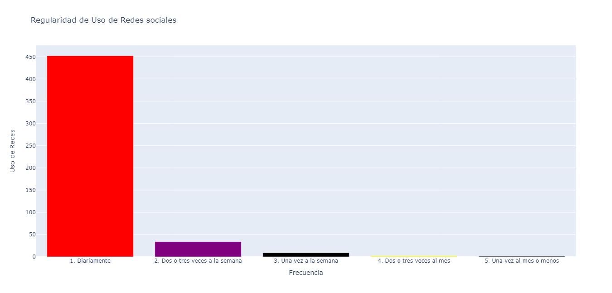

División por Genero
En la muestra de personas que se utilizo para la comparación de datos, se remarca la participacion de mujeres por arriba de la de hombres

Uso de Redes Sociales
De las 500 personas entrevistadas, podemos notar que mas del 90% utiliza redes sociales a diario. Cada vez mas, las redes y el internet se vuelven elementos indispensables de nuestra vida, lo que aumenta la posibilidad de que estemos expuestos a ciberdelitos de todo tipo.